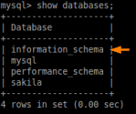

information_schema
The information_schema database is where each MySQL instance stores information about all the other databases that the MySQL server maintains.
From MySQL 5, the information_schema is now listed in the database list when you execute the show databases command.
Most of the database types(with the exception of Oracle) have a set of rule called information_schema
All tables in the information_schema database are stored directly in memory. Thus, when mysqld is shutdown, all information_schema tables are dropped. Then, when MySQL (mysqld) is restarted, all information_schema tables are recreated as TEMPORARY tables and repopulated with metadata for every table
To list all the tables of informations schema
mysql> use information_schema;
mysql> show tables;
mysql> use information_schema; select table_name from tables;
mysql> select table_name from information_schema.tables; #alternative
On
Oracle we can obtain the tables by querying all_tables
To show the columns of an individual table mysql> select * from information_schema.columns where table_name='<table_name>';
On
Oracle we can obtain the columns of a table
SELECT * FROM all_tab_columns WHERE table_name = 'USERS'